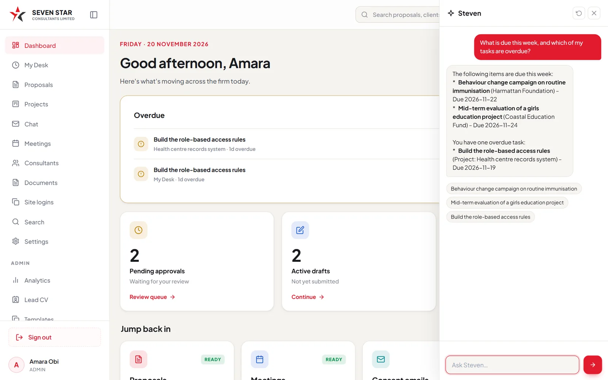
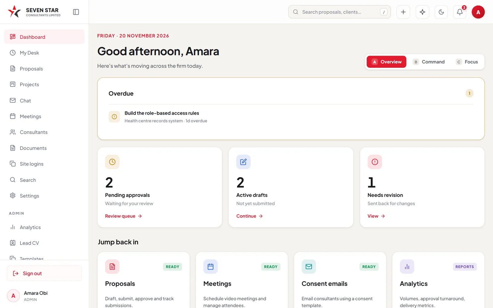
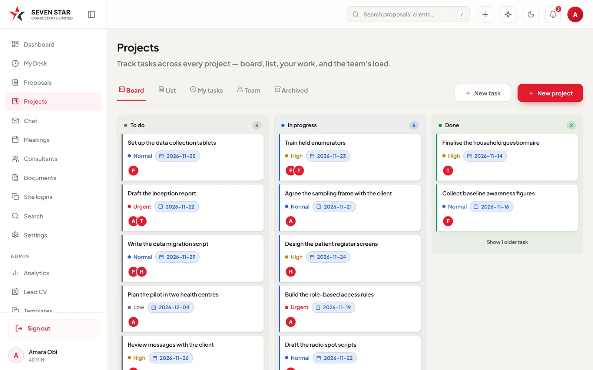
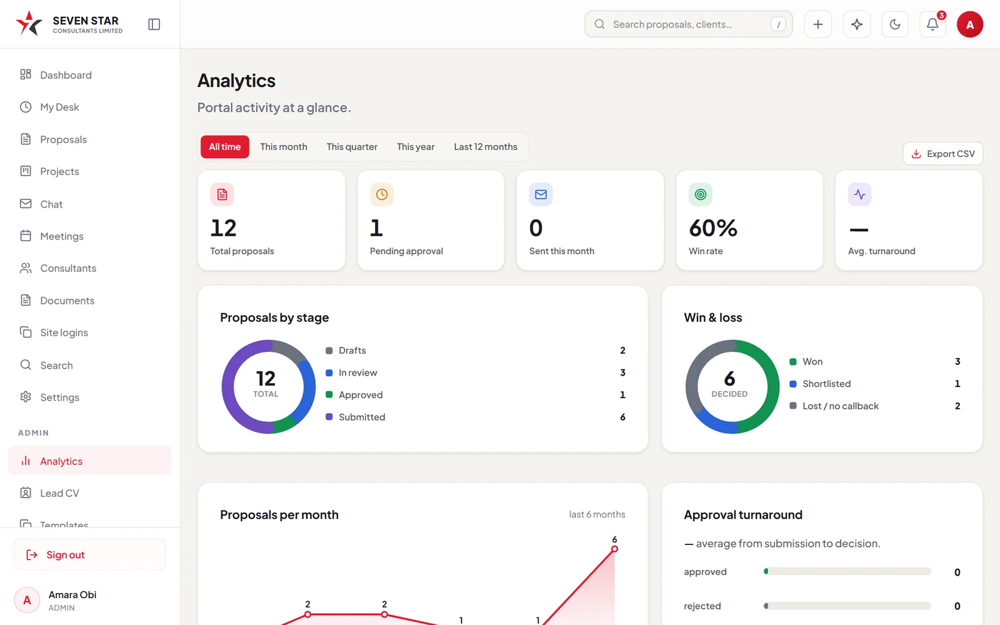
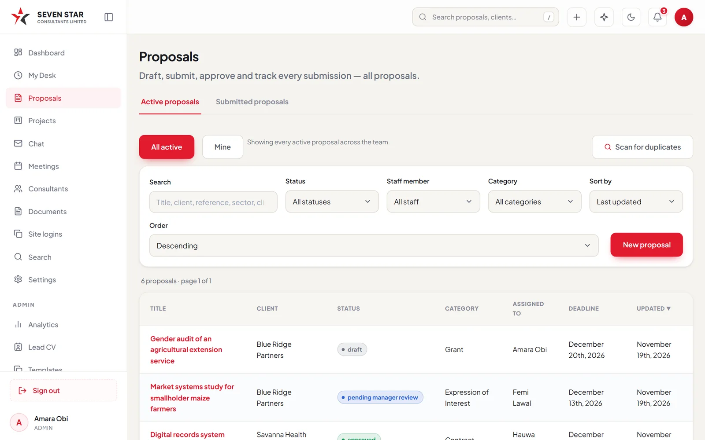
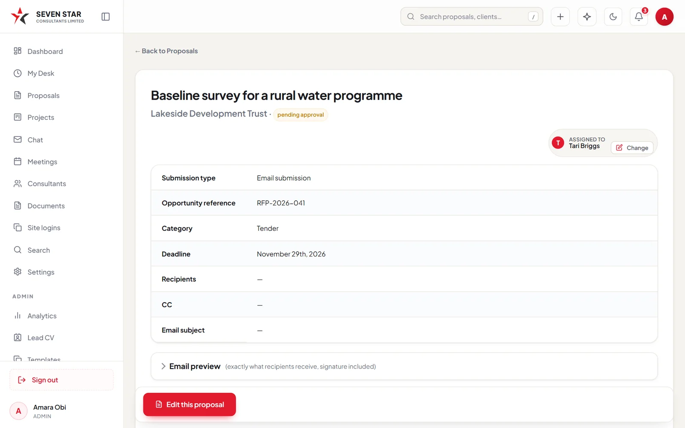

Agentic assistant and AI layer, Seven Star Portal
Problem. Staff needed answers from live portal data without digging through screens.
What I built.
- An agentic assistant that uses function calling across 17 read-only tools to answer staff questions from live portal data.
- A provider-agnostic model layer with Gemini and OpenAI-compatible adapters. It fails over automatically when a provider is down.
- An RFP reader that pulls structured fields out of uploaded tender PDFs and checks them before they are used.
- An LLM-based document classifier.
- Automated tests for prompts, tool behaviour and output checks.
Fig. 2 The tool loop and the provider layer
Plates 1 to 6 Seven Star Portal on screen
Made on a separate copy of the portal running on a laptop, with an empty database filled with invented staff, clients and proposals. No company data. The assistant's answer came from a local model through the OpenAI-compatible adapter of the provider layer, not from Gemini as in production.


View larger.

View larger.

View larger.

View larger.

View larger.

View larger.